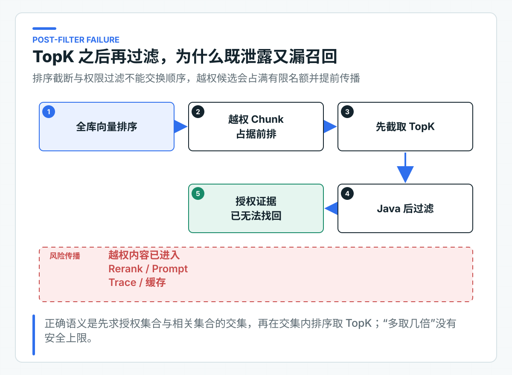
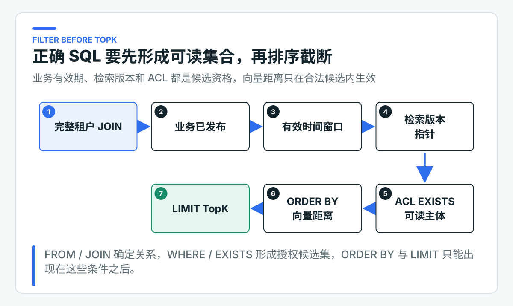

权限为什么必须在 TopK 之前过滤
向量检索里有一种实现很常见：先从全库取相似度最高的 20 条 Chunk，再在 Java 中删掉当前用户无权阅读的内容。代码直观，结果却不等价。
如果前 20 条都来自无权访问的财务制度，过滤后只会得到空列表；真正可见的售后政策即使排在第 21 位，也已经被 TopK 截掉。更严重的是，那些越权文本可能早已进入 Rerank、日志或模型上下文。
所以，权限条件要参与候选集合的形成。只有当前身份可读、当前有效且属于目标索引版本的 Chunk，才进入距离排序。
TopK 之后过滤会漏掉正确结果
假设知识库中有 100 条财务制度 Chunk 与问题高度相关，客服用户无权读取。对客服开放的售后政策排在全库第 101 位。
如果先从全库取 Top10，再删除财务内容，最终结果是空。把 TopK 改成 50 仍然是空，改成 100 也可能是空。只有先建立客服可见集合，再在这个集合中取 TopK，售后政策才会被召回。

用集合表达更清楚。R(q) 表示所有 Chunk 按查询 q 的相似度排序，A(identity, time) 表示当前身份在当前时间有权读取的 Chunk 集合。
正确计算是：
TopK(R(q) ∩ A(identity, time))
错误计算是：
Filter(TopK(R(q)), A(identity, time))
排序截断和权限过滤不能交换顺序。TopK 一旦把第 101 位之后的内容丢掉，Java 过滤无法把正确证据找回来。所谓“多取一点再过滤”只是猜测越权内容有多少，没有可证明的安全边界，也没有稳定的召回上限。
越权候选会继续流向下游
有人会认为，只要最终响应没有返回越权文本，就不算泄露。这个判断忽略了检索结果在响应前还会经过多少环节。
越权 Chunk 可能进入 Rerank 模型、Prompt 组装、Trace、调试日志和缓存。即使响应前的 Java 代码删掉了文本，第三方模型 Provider、观测系统或共享缓存已经看过内容。权限边界一旦越过，响应层删除不能撤销前面的传播。
分数和元数据也可能泄露信息。接口返回“存在 10 条高度相关内容，但无权查看”，就能让用户推断某项制度或某个项目存在。严格场景下，越权候选不应该参与计数、排序、耗时差异和错误分支。
后过滤还会污染运行指标。空召回率突然升高，看起来像 Embedding 质量下降，实际是 TopK 被越权内容占满。团队可能继续调大 K、增加 Rerank 成本，却没有修复权限条件的位置。
因此，最小原则是：明文、向量、分数和元数据在进入任何下游处理前，都必须处于已授权集合中。
访问范围来自服务端身份
权限下推到 SQL 之前，先要确认权限输入已经过验证。
请求体里的 tenantId、userId 和 departmentIds 不能直接变成检索条件。调用者可以修改这些值。知识服务应从受信身份组件取得当前身份，再转换成应用层的访问范围。
KnowledgeAccessScopeProvider 屏蔽身份协议差异，统一生成 KnowledgeAccessScope：
public record KnowledgeAccessScope(
TenantId tenantId,
String subjectId,
List<String> departmentIds
) {
public KnowledgeAccessScope {
if (subjectId == null || subjectId.isBlank()) {
throw new IllegalArgumentException("subjectId must not be blank");
}
departmentIds = List.copyOf(departmentIds);
}
}
KnowledgeAccessScope 进入应用用例后就代表已认证身份，不再接受业务参数覆盖。Controller 可以接收问题、TopK 等查询输入，但不能让用户在 JSON 中选择自己属于哪个租户或部门。
本地默认使用固定的 tenant-a / local-user / support，不需要额外生成 Token。公司环境则由 JWT、Session、网关或权限服务适配器建立同一个对象。无论采用哪种协议，调用方自报的身份都不能覆盖它。
部门为空时，应当解释为用户没有部门授权，而不是“部门条件不限”。查询会省略部门 ACL 分支，同时保留用户授权和租户级授权。空集合的语义必须收紧权限，不能扩大权限。
用 ACL 表表达可读集合
访问控制列表（Access Control List，ACL）用于描述哪些主体可以读取哪些文档。数据模型用 document_acl 保存文档级读取授权：
CREATE TABLE document_acl (
tenant_id VARCHAR(128) NOT NULL,
document_id VARCHAR(160) NOT NULL,
subject_type VARCHAR(32) NOT NULL,
subject_id VARCHAR(160) NOT NULL,
permission VARCHAR(32) NOT NULL,
created_at TIMESTAMPTZ NOT NULL,
PRIMARY KEY (
tenant_id, document_id,
subject_type, subject_id, permission
)
);
当前支持三种读取主体：具体用户、部门和整个租户。某个文档只要存在一条与当前身份匹配的 READ 记录，就进入可读集合。
USER -> subjectId 精确匹配当前用户
DEPARTMENT -> subjectId 位于当前用户部门集合
TENANT -> subjectId 匹配当前租户
这是一套显式允许模型。没有匹配记录就是不可读。它比“默认全员可见，敏感文档再加限制”更适合企业知识，因为新文档、导入数据和异常流程不会因漏配一条拒绝规则自动开放。
当前模型没有表达显式 DENY、组织层级继承、岗位属性和动态条件。公司已有 IAM 或 ABAC 平台时，不要把复杂策略翻译成越来越长的 SQL 字符串。可以由授权服务计算稳定的策略集合或可查询授权关系，再让知识检索执行本地可判定条件。远程逐 Chunk 调用权限服务会产生 N+1 请求，也无法保证 TopK 前完成候选裁剪。
显式拒绝一旦加入，就必须定义优先级。例如用户被部门授权，同时被单独拒绝，最终是允许还是拒绝。规则没有唯一答案，但必须由权限域统一决定，不能让知识服务、搜索服务和前端各写一套。
每一次关联都带上租户条件
多租户系统不能只在最外层加 WHERE tenant_id = ?，后面的关联却只用 document_id。不同租户可能拥有同名文档 ID，一次漏掉租户条件的 JOIN 就可能把版本、ACL 或 Chunk 串到另一个租户。
表的主键和外键都把 tenant_id 放进标识，查询关联同样携带租户：
JOIN document_search_version dsv
ON dsv.tenant_id = dc.tenant_id
AND dsv.document_id = dc.document_id
AND dsv.version_number = dc.version_number
ACL 子查询也同时匹配 tenant_id 和 document_id。这种重复看起来啰嗦，却能让隔离条件沿着数据关系传递。数据库行级安全、独立 Schema 或独立实例可以形成更强隔离，但应用查询仍然要带租户语义，否则本地测试和迁移脚本很容易产生跨租户行为。
如果公司按租户分库，tenantId 还要参与数据源路由。路由完成后仍建议在表中保留租户列，用于审计、备份恢复和防止错误路由后的静默串数。是否保留要结合数据规模与监管要求决定，不能只为了少一个字段放弃可追溯性。
版本状态与有效时间共同决定可见性
权限不只回答“谁能看”，还要回答“这份文档当前是否允许服务，以及哪一版索引已经准备好”。草稿和尚未生效的政策即使 ACL 匹配，也不应该进入线上问答。
因此，可检索集合还包含这些确定性条件：
dsv.version_number = dc.version_number
AND EXISTS (
SELECT 1
FROM document_version active_dv
WHERE active_dv.tenant_id = dc.tenant_id
AND active_dv.document_id = dc.document_id
AND active_dv.status = 'PUBLISHED'
AND active_dv.effective_from <= :effectiveAt
AND (active_dv.effective_until IS NULL
OR active_dv.effective_until > :effectiveAt)
)
AND dc.embedding IS NOT NULL
生效时间由服务端确定，通常取服务端收到请求时的时间。除非业务明确支持历史查询，否则不要让普通用户在请求中传任意 effectiveAt，否则他可能检索已经失效或尚未公开的版本。
业务发布状态与索引完成状态也要分开。document_search_version 只在目标版本的全部分块写入成功后切换。替换版本仍在索引时，已有文档继续查询上一版索引；首次发布没有可回退版本，在索引完成前不会返回这份文档。ACL 是文档级规则，新发布写入的 ACL 会立即约束上一版索引。
SQL 先形成可见集合，再排序截断
PgVectorSearchQuery 先通过 JOIN 和 WHERE 约束租户、检索版本、业务有效期与 ACL，形成候选集合后再执行向量排序和 LIMIT：
SELECT dc.chunk_id,
dc.document_id,
dc.version_number,
dc.heading_path,
dc.clause,
dc.content,
1 - (dc.embedding <=> ?::vector) AS score
FROM document_chunk dc
JOIN document_search_version dsv
ON dsv.tenant_id = dc.tenant_id
AND dsv.document_id = dc.document_id
AND dsv.version_number = dc.version_number
WHERE dc.tenant_id = ?
AND dc.embedding IS NOT NULL
AND EXISTS (
SELECT 1
FROM document_version active_dv
WHERE active_dv.tenant_id = dc.tenant_id
AND active_dv.document_id = dc.document_id
AND active_dv.status = 'PUBLISHED'
AND active_dv.effective_from <= ?
AND (active_dv.effective_until IS NULL
OR active_dv.effective_until > ?)
)
AND EXISTS (
SELECT 1
FROM document_acl acl
WHERE acl.tenant_id = dc.tenant_id
AND acl.document_id = dc.document_id
AND acl.permission = 'READ'
AND (
(acl.subject_type = 'USER' AND acl.subject_id = ?)
OR (acl.subject_type = 'DEPARTMENT' AND acl.subject_id IN (...))
OR (acl.subject_type = 'TENANT' AND acl.subject_id = ?)
)
)
ORDER BY dc.embedding <=> ?::vector
LIMIT ?;

SQL 的逻辑执行顺序正好表达业务含义：FROM/JOIN 确定数据关系，WHERE/EXISTS 形成当前身份可用的候选集合，ORDER BY 在集合内部计算距离顺序，LIMIT 完成截断。
不要把 ACL 条件只放进应用层 Repository 名字，实际 SQL 却在子查询外先 LIMIT。安全评审要看生成后的 SQL 和执行计划。ORM、向量框架或搜索 SDK 的过滤参数，也要确认它们是在服务端检索阶段执行，还是取回候选后才在客户端过滤。
部门数量可变时，当前实现只拼接 ? 占位符，部门 ID 仍通过 PreparedStatement 绑定。部门为空则不生成 IN 分支，避免 IN () 语法错误，也避免把空部门误解为任意部门。
放大候选数量无法修正边界
后过滤方案常见的补丁是按 K * 10 召回，再过滤到 K 条。它仍然解决不了问题。
第一，越权候选在过滤前已经离开存储边界。第二，越权比例没有稳定上限，财务制度可能占前 100 条，也可能占前 10 万条。第三，过取会放大向量计算、网络传输和 Rerank 成本。第四，不同用户看到的候选不足程度不同，质量指标无法解释。
分页会让问题更明显。第一页过滤后只剩 2 条，第二页的偏移量应该按全库排名还是授权集合排名？只要分页发生在过滤前，就无法给出稳定且无泄露的游标。
正确修复只有一个方向：让存储引擎在排序和截断前看到授权条件。如果所选向量产品做不到这一点，就要调整数据组织、索引策略或产品选型，而不是在 Java 中补一个 filter。
性能与权限变化不能改写可见集合
在真实权限范围内评测近似索引
权限前置解决了安全语义，不代表性能和召回自动稳定。近似向量索引面对选择性很高的过滤条件时，可能需要扫描更多候选，才能找到 K 条授权结果。某些用户可见整个租户，某些用户只看一个小部门，两者的执行计划和尾延迟会差很多。
公司项目至少要按三类访问范围压测：租户级广权限、部门级中等范围、用户级窄权限。每类记录 P95/P99、返回条数、Recall@K 和数据库读取量。如果窄权限经常返回不足 K 条，需要评估索引搜索参数、数据分区、局部索引或按安全域拆分索引。
不要为提高召回把 ACL 从索引查询中拿掉。性能优化必须保持同一个授权集合。可以改变物理组织和搜索参数，不能改变“谁有资格参与排序”的业务规则。
document_acl 上的索引按 tenant_id, subject_type, subject_id, document_id 排列，服务于从当前身份查可读文档。是否还需要以 document_id 开头的索引，要根据真实执行计划决定。索引过多会增加文档授权变更的写成本，也会占用缓存空间。
权限变更后的索引与缓存处理
读取权限不是静态配置。用户转岗、部门调整、文档提密或账号冻结后，旧授权要尽快失效。
当前查询每次读取 document_acl，权限更新提交后，新查询会看到新集合。引入缓存时要格外谨慎。缓存键至少要包含租户、主体、部门集合、授权版本和检索策略，仅用“问题文本 + topK”作为键会直接跨用户复用结果。
更稳妥的方式是缓存不含敏感正文的公共计算，或者缓存已经按稳定安全域隔离的结果。权限变化频繁、文档敏感度高时，宁可先不缓存检索结果，也不要设计一个无法可靠失效的授权缓存。
如果查询走只读副本，还要考虑复制延迟。新增权限晚几秒生效通常只是可用性问题，撤销权限晚几秒生效则可能是安全问题。敏感权限撤销可以在短窗口内强制读主库，或者使用能表达读取位点的一致性机制。具体方案取决于数据库架构，但不能假设“最终一致总会没事”。
ACL 更新和文档发布也需要明确事务边界。新版本发布时，如果 ACL 尚未写入，显式允许模型会让它暂时不可见，这通常比意外全员可见安全。反过来，先写租户级 ACL、后写敏感文档，可能产生短暂开放窗口。创建文档、设置 ACL 和允许发布的顺序应由一个应用用例约束。
更相似的越权样本才能暴露错误
只测试“授权文档能够查到”，证明不了 ACL 在 TopK 前执行。有效测试要同时放入授权文档、同租户越权文档和其他租户文档，并让越权文档在未过滤时足以占据 TopK。
连续实验额外发布一份只允许 finance 部门读取的文档，并写入唯一词 quartz-lotus-927。本地身份属于 support；即使直接搜索这个唯一词，控制台仍应显示 财务文档进入 TopK: false。这就是本篇的读者可见负例。
PgVectorSearchQueryTest 先检查 SQL 结构：租户、检索版本、业务有效期、用户和部门 ACL 均出现在 LIMIT 之前；没有部门声明时，不生成部门分支。
启动检查会加载服务默认配置，其余用例直接验证 SQL 生成和本地身份映射。整组验证不需要数据库、身份平台或模型密钥，但也不能代替真实 PostgreSQL 的执行结果。
PgVectorExternalIT 使用真实 PostgreSQL 与 pgvector，写入当前用户可读、同租户越权和其他租户的 Chunk。
越权 Chunk 与查询向量完全一致，其他租户 Chunk 也比授权 Chunk 更相似。以 topK=1 查询时，结果仍然只能是授权 Chunk；权限条件若在截断后执行，这个用例就会失败。
日常代码验证不依赖 PostgreSQL。真实数据库验证属于接入公司环境后的迁移检查。
PgVectorExternalIT 会清空并重建测试结构，只能在一次性或专用数据库运行，不会进入默认本地验证。已有外部验证覆盖真实 SQL、Flyway 表结构、pgvector 运算和“越权内容更相似”的对抗样本。正式项目还要增加已过期版本、未来生效版本、空部门、权限撤销和跨租户同名文档等案例。安全测试要专门构造最容易被错误实现放过的内容，确认它们进不了候选集。
接入现有权限体系时的检查项
可以直接复用的是身份转换、仓储端口和 SQL 过滤的整体边界。经过验证的身份先转换成 KnowledgeAccessScope，SQL 再在 TopK 前完成租户与 ACL 过滤；返回结果继续保留文档版本和引用元数据。
需要按公司权限体系替换的是主体类型、组织关系、显式拒绝、临时授权、密级、区域限制和策略决策来源。权限规则越复杂，越应该由专门权限服务返回明确、可记录的判断结果；知识服务负责执行结果，不能让 Prompt 或模型判断用户是否有权阅读。
还要守住一条数据传播边界：未授权 Chunk 不进入 Rerank，不进入模型上下文，不进入可搜索日志，也不进入跨身份缓存。只要这条边界成立，后续增加关键词检索、Query Rewrite、Rerank 或其他向量存储时，权限判断才不会随着框架实现改变。